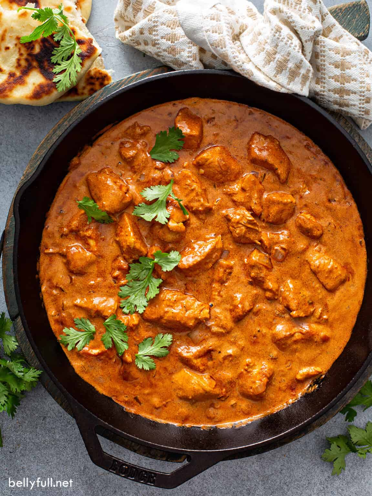

Chicken Tikka Masala

Description:
Chicken Tikka Masala is a popular Indian dish known for its rich and creamy tomato-based sauce.
Tender pieces of marinated chicken are cooked in a flavorful blend of spices, yogurt, and cream.
This dish has a mild, yet aromatic and slightly tangy flavor profile.
It's often enjoyed with fragrant rice or warm naan bread and is a favorite in Indian restaurants worldwide.
Ingredients required:
- 500 grams boneless chicken, cut into bite-sized pieces
- 1 cup plain yogurt
- 2 tablespoons ginger-garlic paste
- 2 tablespoons tikka masala spice mix
- 1 tablespoon vegetable oil
- 1 onion, finely chopped
- 1 can (400g) of crushed tomatoes
- 1/2 cup heavy cream
- Salt to taste
Steps:
- In a bowl, mix yogurt, ginger-garlic paste, tikka masala spice mix, and a pinch of salt.
- Add chicken pieces to the yogurt mixture and marinate for at least 30 minutes (overnight is best).
- Heat oil in a pan over medium-high heat. Add chopped onions and sauté until they turn translucent.
- Add marinated chicken and cook until it's no longer pink, stirring occasionally.
- Pour in the crushed tomatoes and simmer for 10-15 minutes.
- Stir in the heavy cream and simmer for an additional 5 minutes
- Garnish with fresh cilantro leaves and serve with rice or naan.